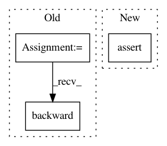

95f5cc60904a2d88d4861fff0f6dbad15f8cdbe3,tests/nightly/test_np_large_array.py,,test_amax,#,187
Before Change
A[100][1] = 1
A.attach_grad()
with mx.autograd.record():
B = np.amax(A)
print(B)
assert B == 1.0
B.backward()
assert A.grad.shape == (INT_OVERFLOW, 2)
assert A.grad[0][0] == 0
After Change
out.backward()
assert out == 1.0
assert inp.grad.shape == (INT_OVERFLOW, 2)
assert inp.grad[0, 0] == 0 and inp.grad[-1, -1] == 1
@use_np
def test_argmin():
In pattern: SUPERPATTERN
Frequency: 4
Non-data size: 3
Instances
Project Name: apache/incubator-mxnet
Commit Name: 95f5cc60904a2d88d4861fff0f6dbad15f8cdbe3
Time: 2020-10-06
Author: zhaoqizhu96@gmail.com
File Name: tests/nightly/test_np_large_array.py
Class Name:
Method Name: test_amax
Project Name: rusty1s/pytorch_geometric
Commit Name: 455a0dc9a98212089a7201a025670c33a1770f67
Time: 2017-10-23
Author: matthias.fey@tu-dortmund.de
File Name: torch_geometric/nn/functional/spline_gcn_test.py
Class Name: SplineGcnTest
Method Name: test_backward
Project Name: apache/incubator-mxnet
Commit Name: 95f5cc60904a2d88d4861fff0f6dbad15f8cdbe3
Time: 2020-10-06
Author: zhaoqizhu96@gmail.com
File Name: tests/nightly/test_np_large_array.py
Class Name:
Method Name: test_amin
Project Name: apache/incubator-mxnet
Commit Name: 95f5cc60904a2d88d4861fff0f6dbad15f8cdbe3
Time: 2020-10-06
Author: zhaoqizhu96@gmail.com
File Name: tests/nightly/test_np_large_array.py
Class Name:
Method Name: test_abs